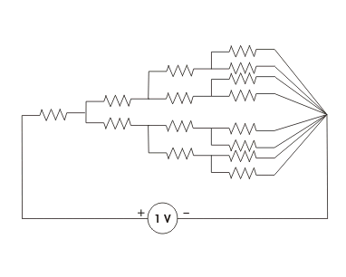
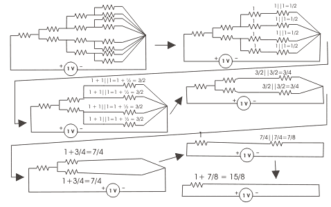
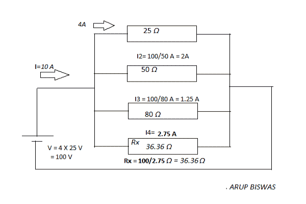
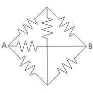

- A 1 kΩ, 1 W resistor can safely pass a electric current of
The wattage rating of the resistor W = I2R
Here W = 1 W, R = 1 kΩ = 1000 Ω
∴ I = √(1/1000) = 0.0316 A = 31.6 mA > 30 mA. - Two resistors are connected in parallel across a battery of 2 V and a electric current flow through the combine resistors is 2 A. It one of the resistors is disconnected, the electric current will become 1.5 A, then what will be the resistance of that disconnected resistors?
Total electric current is 2 A and after disconnection of one, resistors, the electric current drawn from the battery, is 1.5 A. That means the disconnected resistors was sharing 0.5 A of currents. So resistance of the disconnected resistor will be 2 / 0.5 = 4 ohm.
- Parallel combination of three 3 ohm resistors, connected in series with parallel combination of two 2 ohm resistors, what will be the equivalent resistance of overall combination ?
- When a numbers of different valued resistance are connected in series, the voltage drop across each of the resistor is
Let V is the source voltage and R1, R2, R3,.....Rn resistances are connected in series, across the source of voltage V. Therefore, the electric current through the resistances will be R1 + R2 + R3 +.....+ Rn
Therefore, V1 = IR1, V2 = IR2, V3 = IR3......Vn = IRn. That means Vn ∝ Rn
So, voltage drop across each resistance will be proportional to their resistive values. - All the resistances in figure shown below are 1 Ω each. The value of electric current in Ampere through the battery is

If look at the circuit from right side, we will see that the equivalent resistance of the circuit is 15 / 4 Ω. Current through the battery will be 1 V / (15 / 4) Ω = 4 /15 A. - Two wires A and B of same material and length l and 2l have radius r and 2r respectively. The ratio of their specific resistance will be
The resistivity of any substance depends upon its material not upon its dimensions.
- If the length of a wire of resistance R is uniformly stretched n times its original value, its new resistance is
Let's cross-section of the wire is A = πr2, length of the wire is l therefore volume of the wire is A.l. Now if the length of the wire is stretched to n times of its original length i.e. now length of the wire becomes l' = nl. Now if r' is the new radius of the cross-section of the wire then new cross-sectional area A' = πr'2. If the volume of the wire is same before and after stretching, A.l = A'l' ⇒ πr'2nl = πr2l ⇒ r'2 = r2/n ⇒ πr'2 = πr2 / n ⇒ A' = A / n. Thus resistance of the wire after stretched is ρ( l' / A') = ρ{ nl / ( A / n )} = n2ρ( l / A) = n2R.
- The resistance between the opposite faces of 1 m cube is found to be 1 Ω. If its length is increased to 2 m, with its volume remaining the same, then its resistance between the opposite faces along its length is
Volume = lengthXarea so if length is increased by 2 times then area will be decreased by 1/2, if resistance R = ρ( l / A) = 1 Ω ⇒ R' = ρ( 2l / 0.5A) = 4ρ( l / A) = 4R = 4 Ω.
- A wire of length l and of circular cross - section of radius r has a resistance of R ohms. Another wire of same material and of x-section radius 2r will have the same R if the length is
The cross-section of the first wire is πr2. The cross-section of the second wire is π(2r)2 = 4πr2. The resistance of any wire depends upon the ratio of its length to area. So if the cross-section of the second wire is 4 times of that of first wire, the length of the second wire must also be 4 times of that of first if the resistance of both wires are same.
- The insulation resistance of a cable of 10 km is 1 MΩ. For a length of 100 km of the same cable, the insulation resistance will be
Conductor resistance is directly proportional to length. But insulation resistance is the resistance to the flow of leakage electric current to ground. Since the flow of leakage electric current is directly proportional to the length of the conductor as because with length conductor inner and outer surface are of the insulation layer of the conductor increases. So insulation resistance is inversely proportional to the length of conductor.
- The hot resistance of the filament of a bulb is higher than the cold resistance because the temperature coefficient of the filament is
Positive temperature coefficient refers to materials that experience an increase in electrical resistance when their temperature is raised.
- The temperature coefficient of resistance of an insulator is
Under Construction
- Four resistances 80 Ω, 50 Ω, 25 Ω and R are connected in parallel. Current through 25 Ω resistance is 4 A. Total electric current of the supply is 10 A. The value of R will be

The electric current through 25 Ω resistor is 4 A hence voltage across it is 4 × 25 = 100 V and this is the voltage across the supply as well as other resistors. Hence electric current through 50 Ω and 80 Ω resistors will be 100 / 50 = 2 A and 100 / 8 = 1.25 A. Therefore electric current through Rx will be 10 - 4 - 2 - 1.25 = 2.75 A and then Rx = 100/2.75 = 36.36 Ω - Three parallel resistive branches are connected across a DC supply. What will be the ratio of the branch electric current I1:I1:I1 if the branch resistances are in the ratio R1:R2 : R3 : : 2 : 4 : 6
Current is inversely proportional to resistance. Then 1 / 2 : 1 / 4 : 1 / 6 = 3 : 3 / 2 : 1 = 6 : 3 : 2.
- Two resistors R1 and R2 given combined resistance of 4.5 Ω when in series and 1 Ω when in parallel, the resistance are
When in series
R1 + R2 = 4.5...........(1)
when in parallel
(R1R2)/(R1 + R2) = 1
(R1R2)/4.5 = 1
R1R2 = 4.5..........(2)
Combining (1) and (2), we get,
R1 = 1.5 Ω or 3 Ω and R2 = 3 Ω or 1.5 Ω. - When a resistor R is connected to a current source , it consumes a power of 18 W. When the same R is connected to a voltage source having the same magnitude as the current source , the power absorbed by R is 4.5 W. The magnitude of the current source and the value of R are
For resistance R, connected to the current source , the consumed power is 18 W i.e 18 = I2R ................. (1) and for second condition 4.5 = V2 / R ............. (2) and electric current and voltage having same magnitude that is V = I ................ (3).
By solving these 3 equations we get R = 2 ohms and I = 3 A - When all the resistances in the circuit are of 1 Ω each, the equivalent resistance across the points A and B will be
All the resistances are same. There is no potential difference between central vertical resistance ( like Wheatstone bridge ), so it can be imagined that it is opened. Then the equivalent resistance between A and B is
Req = (1+1) || (1+1) || 1 Ω
Req = 2 || 2 || 1 Ω
Req = 0.5 Ω - Resistivity of metals is expressed in terms of
Under Construction.
- Resistivity of copper is of the order of
Under construction.
- Resistivity of copper at absolute zero is
The resistivity of copper does not vanish at absolute zero. Instead, its level at absolute zero is known as the residual resistance. Copper has a residual resistance of 0.020 nΩ m.
Design with  by SARU TECH
by SARU TECH
www.sarutech.com
Content Credited to electrical4u.com
Online Electrical Engineering Study Site